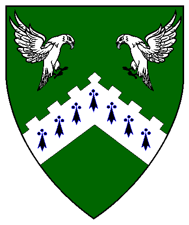

The Oertha Armorial
Awards of Arms (Simple Order of Precedence)
AA's Part V
Updated 1/22/25
Anyone with the following:
has no with the College of Arms
Anyone with this border:
Most of the information herein is based on the West Kingdom Order of Precedence,
Francisco of Pavlok Gorod 
Award of Arms April 16, AS XLV (2011) Kennric & Dagmar
To the Patents (Knights, Laurels, Pelicans)
To the Grants of Arms, Leaves of Achievement, and Court Baronies: Part I
To the AA's Part V Page
Awards of Arms Part VI
To the AA's Part VII Page
Some artwork provided by owners of arms depicted.

Blazons without visual shield/designs are in the works.
has their AA but are not in the official Order of Precedence
or the O.P.'s of other Kingdoms.
Contact me to forward corrections or with name/spelling preferences.
AWARDS OF ARMS
Armigers of Oertha (continued)
from January A.S. XLIV (2010)
the Reign of Kenric and Rolynnda
to from January A.S. LIV (2019)
the Reign of Gregor and Bella
Award of Arms July 17, AS XLV (2010) Kenric & Rolynnda
Jamie of Eskalya
Award of Arms July 17, AS XLV (2010) Alfar & Ketiley
Anneliese Fleischer
Award of Arms January 16, AS XLV (2011) Magnus & Esperanza
Egan the Sequestrious
Award of Arms January 16, AS XLV (2011) Magnus & Esperanza
Helmut Fleischer
Award of Arms January 16, AS XLV (2011) Magnus & Esperanza
Victor d'Entremente (aka Jean d'Entreman)
Award of Arms January 16, AS XLV (2011) Magnus & Esperanza
Kenneth Haldane
Vert, a chevron embattled ermine and in chief two falcons striking respectant argent.
Barak the Hunter
Award of Arms September 10, AS AS XLVI (2011) Rurik & Trava
Otho Vertulie
Award of Arms December 10, AS AS XLVI (2011) Rurik & Trava
Leona the Mouse
Award of Arms December 10, AS AS XLVI (2011) Rurik & Trava
Angelina Tiana Bezova
Award of Arms January 21, AS XLVI (2011) Rurik & Trava
Katya of Oertha
Award of Arms January 22, AS XLVI (2011) Uther & Kara
Aoife O'Foalin
Award of Arms February 19, AS XLVI (2012) Taran & Heleyne
Lamorak D'Pellinore
(Deceased)
Award of Arms July 21, AS XLVII (2012) Taran & Helen
Rebecca fitzRobert
Award of Arms July 22, AS XLVII (2012) Taran & Helen
Thomas Ferret
Award of Arms September 1, AS XLVII (2012) Rurik & Trava
Willum the Turtle
Award of Arms october 27, AS XLVII (2012) Rurik & Trava
Aine of Selviergard (aka Aine O Cearbhaill)
Award of Arms December 1, AS XLVII (2012) Rurik & Trava
Ciaran O'Cearbhaill
Award of Arms December 1, AS XLVII (2012) Rurik & Trava
Erin of Pavlok Gorod
Award of Arms April 6, AS XLVII (2013) Kenric & Katerina
Haakon Adulwolfeson
Award of Arms May 25, AS XLVIII (2013) Kenric & Katerina
Wulfgar of Eskalya
Award of Arms January 18, AS XLVIII (2014) Nathan & Lilla
Haelgath of Winter's Gate
Award of Arms January 18, AS XLVIII (2014) Thorfinn & Violante
Hannah Caitlin Carey
Award of Arms April 26, AS XLIX (2014) Thorfinn & Violante
Tiana of Winter's Gate
Award of Arms April 26, AS XLIX (2014) Thorfinn & Violante
Signi Fergusdottir
Award of Arms April 26, AS XLIX (2014) Kenric & Dagmar
Ragnal Mac Cormack
Award of Arms April 26, AS XLIX (2014) Kenric & Dagmar
Adolphus Wolfhelm
Award of Arms July 19, AS XLIX (2014) Kenric & Dagmar
Johannes Brauer
Award of Arms July 19, AS XLIX (2014) Kenric & Dagmar
Laura the Quiet
Award of Arms July 19, AS XLIX (2014) Kenric & Dagmar
Solomon Basset
Award of Arms July 19, AS XLIX (2014) Kenric & Dagmar
Thia Falcone
Award of Arms July 19, AS XLIX (2014) Kenric & Dagmar
Aldeyn of Eskalya

Per pale and per chevron Or and vert, on a chevron sable between two hares sejant erect
and two arrows inverted in saltire counterchanged three Maltese crosses palewise argent.
Award of Arms August 23, AS XLIX (2014) Gregor & Isabella
Kolskeggr ungi

Or, a salmon embowed gules and a base wavy barry wavy vert and argent.
Award of Arms August 30, AS XLIX (2014) Gregor & Isabella
James of Winter's Gate

Azure, an open book bendwise and in chief two crescents pendant argent.
Award of Arms August 30, AS XLIX (2014) Gregor & Isabella
Berta von Berdue
Award of Arms September 14, AS XLIX (2014) Gregor & Isabella
Yamani Yuki
Award of Arms November 6, AS XLIX (2014) Gregor & Isabella
Liam the Archer (aka Will of Winter's Gate)
Award of Arms December 20, AS XLIX (2014) Gregor & Isabella
Áine inghean Culain (fka Harmony of the Rose)

Vert, a serpent nowed and on a chief argent three roses sable.
Award of Arms January 18, AS XLIX (2015) Miles & Æsa
Mór ingen Donnchada

Argent, a fess wavy azure between a raven and a wolf passant regardant sable.
Award of Arms July 17, AS L (2015) by Shawn & Arabella
Aelfwynn Sealtecge
Award of Arms September 5, AS L (2015) Duncan & Violet
Bragi Flokason (aka Floyd of Winter's Gate)

Per bend embattled purpure and argent crusily couped azure, on a flame argent a heart gules.
Award of Arms October 16, AS L (2015) Duncan & Violet
Ástríðr Þóradóttir (Astridr Thoradottir)
(fka Rowan Elithsdottir)

Per bend sinister argent and Or, a phoenix vert rising from flames gules.
Award of Arms January 16, AS L (2016) Duncan & Violet
Rayna Fathirsdottir
Award of Arms June 20, AS LI (2016) Shawn and Arabella
Conrad Richter
Award of Arms July 17, AS LI (2016) Shawn and Arabella
Heather of Oertha
Award of Arms July 17, AS LI (2016) Shawn and Arabella
Jeronimus von Wallenfels
Award of Arms July 17, AS LI (2016) Shawn and Arabella
Mella Cassandra de la Selva
Award of Arms July 17, AS LI (2016) Shawn and Arabella
Rachel of Erlenwerder
Award of Arms July 17, AS LI (2016) Shawn and Arabella
Rin the Merchant (aka Rin McCray)

Per bend sinister vert and Or, a sprig of three cherries Or and a wooden wagon proper.
Award of Arms July 17, AS LI (2016) Shawn and Arabella
Kára Blackstar
Award of Arms December 17, AS LI (2016) Kenric & Dagmar
Richard Dean (fka Raiden Dean)

Per chevron inverted Or and azure, an eagle sable, in base two drakkars Or.
Award of Arms December 17, AS LI (2016) Alfarr & Eilis
Adelaide the Weaver
Award of Arms March 18, AS LI (2017) Søren and Alienor
Bjorn Grimmson
Award of Arms May 27, AS LII (2017) Søren and Alienor
Astríðr of Eskalya
Award of Arms June 3, AS LII (2017) Søren and Alienor
Kollr Ulfsson (fka Connar Ulfsson)

Quarterly sable and gules, a bear's paw print between three Thor's hammers argent.
Award of Arms June 3, AS LII (2017) Søren and Alienor
Ryutarou Komori
Award of Arms June 17, AS LII (2017) Søren and Alienor
Connar the Younger of Eskalya
Award of Arms August 27, AS LII (2017) Søren and Alienor
Aaron of Winter's Gate
Award of Arms August 27, AS LII (2017) by Heinrich & Annora
Melinda of Winter's Gate
Award of Arms October 14, AS L (2017) Duncan & Violet
Bear of Eskalya
Award of Arms October 28, AS LII (2017) Duncan and Violet
Jake of Eskalya
Award of Arms October 28, AS LII (2017) Duncan and Violet
Delphine de Grenada
Award of Arms January 21, AS LII (2018) Duncan and Violet
Roselina of Pavlok Gorod
Award of Arms April 14, A.S. LII (2018) Skeggi and Kharakhan
Thorgrimm the Dane

Award of Arms July 21, A.S. LIII (2018) by Uther & Kára
Alric Skegglauss

Per saltire sable and gules, in pale a wolf's head couped argent and a dragon's head couped Or.
Award of Arms October 20, A.S. LIII (2018) Culann & Sefa
Hawise de Pevensey

Per pale vert and Or, a unicorn contourny argent
and a griffin gules, in chief a rose purpure.
Award of Arms October 20, A.S. LIII (2018) Culann & Sefa
Drake Donaldsmith

Award of Arms October 27, A.S. LIII (2018) Culann & Sefa
Gypsi Klara

Award of Arms October 27, A.S. LIII (2018) Culann & Sefa
Misty of Bjarnarstrond

Award of Arms November 17, A.S. LIII (2018) Culann & Sefa
Roisin Corby

Per pale purpure and sable, on a sun Or a raven sable, in base a rose per pale argent and Or.
Award of Arms November 17, A.S. LIII (2018) Culann & Sefa
Johannes von Rothe

Award of Arms December 29, A.S. LIII (2018) Culann & Sefa
Sofí Jolicœr Épinette de Rosier

Award of Arms December 29, A.S. LIII (2018) Culann & Sefa
Tempest

Award of Arms January 19, A.S. LIII (2019)
Lena of Eskalya
(deceased)

Per chevron argent and purpure,
two ravens addorsed regardant within a bordure sable.
Award of Arms January 19, A.S. LIII (2019) Culann & Sefa
Abbey Inghean Thomas

Award of Arms April 13, A.S. LIII (2019) Cruscillus & Vicana
Victoria of Pavlok Gorod

Award of Arms April 13, A.S. LIII (2019) Cruscillus & Vicana
Rosalinda Lopez

Award of Arms July 21, A.S. LIV (2019) Cruscillus & Vicana
Scath Ros

Award of Arms December 7, A.S. LIV (2019) by Hans & Helga
Guillermo del Norte

Award of Arms December 7, A.S. LIV (2019) Gregor & Bella
To the Armorial Start Page
Starting January, AS XXXV (2002 to 2010)
Starting January, AS LIV (2020) to Present
Most artwork on these pages created with CorelDraw!3-9 by Khevron.